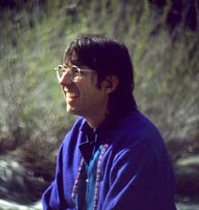
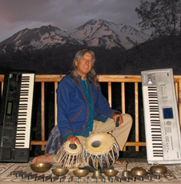
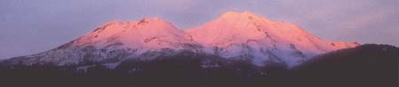

Official web site for the music of Anton Mizerak
Specializing in transformational healing music, massage music, world and new age music.
Youtube Videos: Anton Mizerak Videos
Anton & Laura play other people's songs
Music in Nature Videos optimized for cell phones
Parvati Kirtan Band (videos and schedule)
Download Anton's newest music (free download)
Talks, annual events and explanations:

contact us: